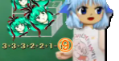
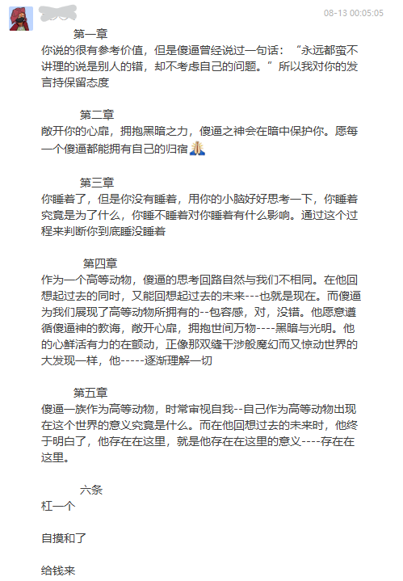
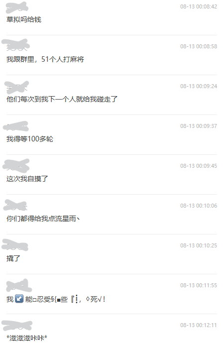

文学集

《学霸题》
傻逼
学霸题，数小鸡鸡——
从男到女数：
棍儿标上一，没有标上 B。
全部夹起来，你穴废了吗？
注释: 暂无。
《cbbdl》①
傻逼
触不到的恋人，
草逼吊大了——
差不多得了。
但又一说：已阅，狗屁不通😅
最上川
——自 «典诗小经»
华领呵笑者阅之，赞叹不已，后书一黄面水豆灵动于上，又加以俳句为尾，立大母指笑观。
注释:
① 出自《西苑典集》。cbbdl 原意为“差不多得了(cbddl)”。
通讯·其一
西苑
傻逼：永远都蛮不讲理的说是别人的错
傻逼：却不考虑自己的问题
徐：你说的很有参考价值，但是傻逼曾经说过一句话：“永远都蛮不讲理的说是别人的错，却不考虑自己的问题。”所以我对你的发言持保留态度
傻逼：你竟敢用我的魔法对付我,波特儿？
傻逼：我感觉... 我的体内有不可思议的黑魔力，让我发出这些不好的黑暗句子
傻逼：啊 我该如何是好...... 我该拿我 怎么办...... 我要绝望了。

徐：敞开你的心扉，拥抱黑暗之力，傻逼之神会在暗中保护你。愿每一个傻逼都能拥有自己的归宿
徐：你睡着了，但是你没有睡着，用你的小脑好好思考一下，你睡着究竟是为了什么，你睡不睡着对你睡着有什么影响。通过这个过程来判断你到底睡没睡着
徐：哦，我的意思是，没错，嗯，傻逼是一种高等智慧的动物，和一般动物相比，层次上就有压倒性的差距，我想在我们用脊髓思考的时候，傻逼们已经开始使用到“脑”了，对，是“脑”，这是一种巨大的变革，我愿称之为：高等动物
徐：作为一个高等动物，傻逼的思考回路自然与我们不相同。在他回想起过去的同时，又能回想起过去的未来---也就是现在。而傻逼为我们展现了高等动物所拥有的--包容感，对，没错。他愿意遵循傻逼神的教诲，敞开心扉，拥抱世间万物----黑暗与光明。他的心鲜活有力的在颤动，正像那双缝干涉般魔幻而又惊动世界的大发现一样，他-----逐渐理解一切

徐：傻逼一族作为高等动物，时常审视自我--自己作为高等动物出现在这个世界的意义究竟是什么。而在他回想过去的未来时，他终于明白了，他存在在这里，就是他存在在这里的意义----存在在这里。
徐：钱，是高等动物赋予物品价值的道具，而娱乐，则是用“脑”来思考的高等动物，为了缓解压力，而存在的一种方式。而当钱和娱乐结合在一起，诞生了许许多多玩法新奇，使人上瘾的游戏。----麻了将，就是其中之一。想要和牌，不仅需要你自游戏开始就要对局面进行掌握，也需要有着超越在场其他所有人的---黑暗之神所赐予的运气。这看似占比很少，却也是最重要的一部分。而当他赢得胜利以后，如果有人不愿意交钱，那将会再次转为冲突，违背了娱乐的本质。而这种冲突，要持续很久。作为替代，获胜的傻逼要求其他人为他点流星雨，再一次体现了无穷大的包容感。其他傻逼也很乐意用这种方式替代金钱，纷纷用不可名状之方式，满足获胜傻逼的要求。
傻逼：妈，是高等动物他姥姥个女儿，而爷，则是用“脑”来思考的傻逼，为了缓解压力，而存在骂妈的一种方式。而当誰のお母さん和爷结合在一起，诞生了警察，使人上瘾的淫手镯。----蹲了牢，就是其中之一。想要出狱，不仅需要你自进去就要对局面进行掌握，也需要有着超越在场其他所有人的---黑暗之神所赐予的希望。这看似占比很少，却也是最重要的一部分。而当他成功越狱以后，如果有police不愿意绝望，那将会再次转为冲突，违背了猫他奶奶个腿的本质。而这种冲突，要持续很久。作为替代，获胜的傻逼要求其他人为他点流星雨，再一次体现了无穷大的包裹感。其他傻逼也很乐意用这种方式替代金钱，纷纷用不可名状之方式，满足越狱奶奶个腿的要求。
徐：你说的观点，或多或少和我的想法有一致之处，这种观点的交换对我们双方的小脑都是有意的。但你的想法或多或少和我的想法不太相符。就好像我不知道蝉3301是什么时候在世界各地的电线杆子上贴上了A4纸，你也不明白在越狱奶奶个腿之前，姥姥的女儿和傻逼结合的可能性有多大，而这种可能性存在之后，又蕴含了多大的能量，才能孕育出警察——这种非凡的职业。作为用“脑”思考的动物，傻逼总是会力争上游，而其中极端者甚至会不择手段———监禁他的父亲，对，如果只是一般人这么做，这招数行不通。
但如果，是傻逼头子与姥姥的女儿结合生下的孩子，警察，就可以实施。傻逼头子在入狱期间，品尝了绝望，但他仍然拥有黑暗之神所赐予的——令人绝望的希望。他成功了，作为具有包容感的傻逼头子，他依然还会选择用流星雨结束这场争端，是的，为傻逼世界献上不可名状的祝福
徐：睡力
徐：说批话真好玩
通讯·其二
《俊睿文集》
木：
*我该睡觉了
*回忆起之前跟郝恩杰的点点滴滴
*更睡不着了
邪恶战胜了理智
若是hej主动加我
我就要当他一辈子的小母狗
我要让他糙似我
妈的
以皮炎子谢罪
hej啊
原谅我好不好
狠狠的灌我的肠
木：
一边给你🎤散热
hej看到了一定会觉得我很恶心吧
恩杰 我的恩杰
原谅我吧
我要是再贪玩再不理你
你就狠狠的惩罚我🥵
谁把群名改回去了
通讯·公以告之
西苑
群公告
谁再说逼，正好就着你爹掺着艾滋病血的精液吃你妈的油炸香逼，多美的黏液饭。
妙言
· 你的生活，都是别人操出来的
· 睾睾姓姓尚穴去 贫平按鞍秽驾来
站长的感悟
2021年 11月21号 23:03
#1# 我会在这里写一点类似随笔感悟的东西。如果有人喜欢看那就太好了，不过这个站点有很多人知道...才怪呢，所以其实是日记 吧？就在刚才脑子里闪过了不少自我介绍的话——“虽然是电波系的x少年，但外表看去很是正义！”（这和脑子里想的其实有很大区别，就当是对自己人格的抬高写法），但是想着想着就变成伤感文学，这也不知如何是好呢。让w访客看到了一定会觉得奇怪吧（笑）。话说回来，github 真是好啊，有了如此便捷的事物存在，也保证了这个破站的永恒延续（毕竟不用交钱）。
#2# 这回想说的是——要多想，思考很重要，嗯。因为大家基本上都切身体验过吧（，或许说是我自己太清高？我故作玄虚？）。大家身边应该都会有一些“思想很深的人”，他们基本上都会有(过?)优异的成绩，我认为是因为他们会比别人想得要更多。我，作为一个自认为有点那么意思的“有思想”的人，以我来看，有思想的人是会互相吸引的，尽管他们除了这一个特点外可能有众多的坏习惯、怪癖，但相处时间长一点大概就能看出来了。有的人很“浅”，但也不是无用的人，如果进行先入为主的思考，我觉得有大部分女生...和男生是没有什么思想深度的。至于这样爱思考的人是如何教育而来的，我也没有一个结论，这也是需要细致地思考才能得来的。
2021年 12月6号 0:22
#1# 回来看看上次写的玩意，...那是啥啊？！现在感觉就像是在Sysyem.out.print("");Sysyem.out.print("");Sysyem.out.print("");Sysyem.out.print("");Sysyem.out.print("");一样啥也没说啊！大概是昏昏欲睡的时候写的 ——我觉得闭上眼睛敲键盘也比“那个”日记好的多罢！！！！
#2# 明天有月考，还是先睡了好。总之下次写点有意义的.